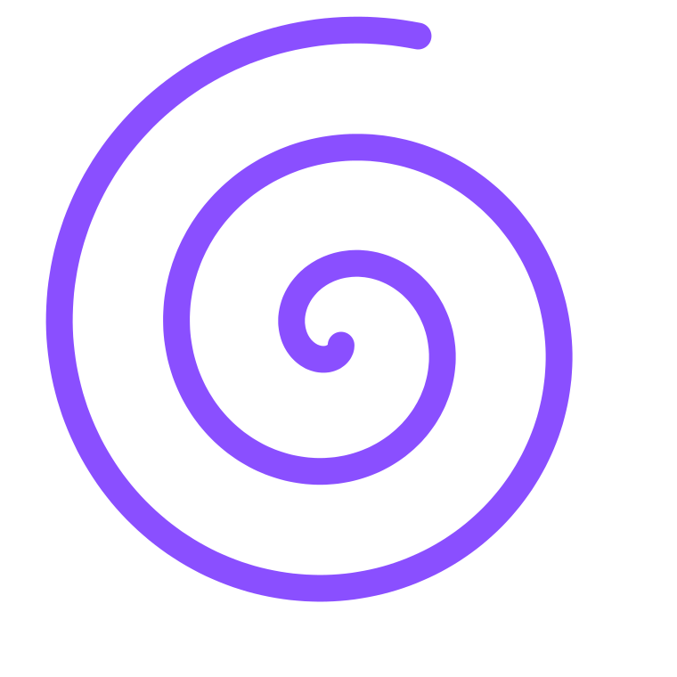

Conteúdo / Verba de marketing. Leitura de 3 minutos

Em resumo
Existe um ponto em que colocar mais dinheiro traz pouco cliente novo. Veja como reconhecer esse ponto e para onde levar a próxima decisão.
O custo por contato subiu de novo. A verba dobrou no último semestre, e as vendas cresceram bem menos do que a conta prometia. Se esse gráfico parece familiar, o anúncio provavelmente está fazendo o trabalho dele. O que chegou ao limite foi o público que ele consegue alcançar.
Anúncio de busca e anúncio para quem já visitou o seu site funcionam muito bem com quem está perto de decidir. O detalhe é que esse grupo é pequeno.
John Dawes, pesquisador do Instituto Ehrenberg-Bass, estimou que cerca de 95% dos compradores de empresas estão fora do mercado em um dado momento. A proporção muda por setor, e em produtos de compra frequente o grupo pronto para comprar é maior. A lógica se mantém: em qualquer mês, boa parte dos seus futuros clientes ainda está longe de procurar.
Quando a verba cresce e esse grupo continua do mesmo tamanho, cada real a mais disputa as mesmas pessoas, no mesmo leilão, com os mesmos concorrentes. O custo sobe porque o espaço encheu.
Dois ou mais desses sinais juntos indicam que vale olhar além da campanha.
A primeira decisão é manter o anúncio que funciona. Ele segue colhendo a demanda que existe. A segunda é começar a plantar a demanda de amanhã: aparecer para quem ainda está fora do mercado, para que a sua empresa seja lembrada quando essa pessoa precisar.
Byron Sharp, autor de How Brands Grow, chama isso de disponibilidade mental: a chance de a sua marca vir à cabeça na hora da compra. Les Binet e Peter Field analisaram centenas de campanhas e encontraram uma média de cerca de 60% da verba em construção de marca e 40% em venda imediata. É uma referência de grandes anunciantes. Para uma empresa menor, o primeiro passo pode ser bem mais modesto, desde que seja constante.
Esse investimento depende de uma mensagem clara. Aparecer para mais gente dizendo o que todo mundo diz custa caro e deixa pouca lembrança. Por isso a ordem importa: primeiro, definir a mensagem que só a sua empresa pode dizer. Depois, repetir essa mensagem em todos os canais, por tempo suficiente para ela ficar.
Quando a conta do anúncio para de fechar, a pergunta passa a ser outra: o que as pessoas vão lembrar da sua empresa no dia em que precisarem dela?
Fontes: John Dawes, Ehrenberg-Bass Institute e LinkedIn B2B Institute (2021); Les Binet e Peter Field, The Long and the Short of It, IPA (2013); Byron Sharp, How Brands Grow.